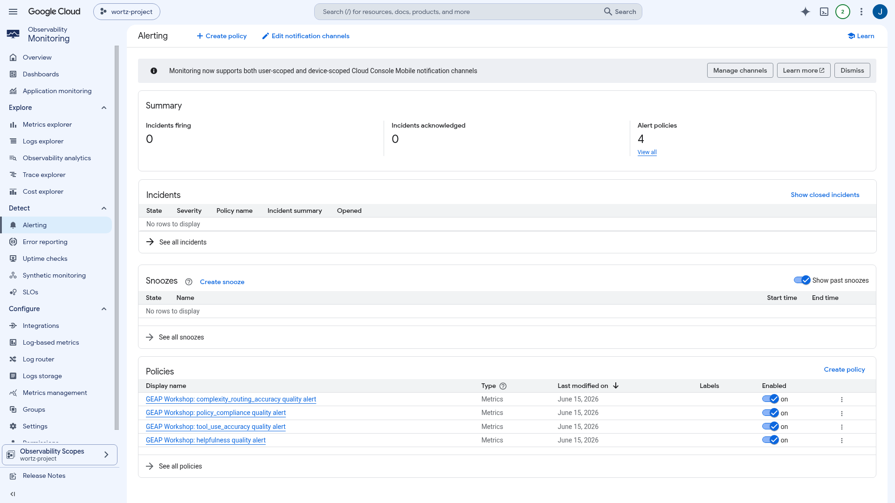

The Quality Flywheel
Evaluating agents on the Agent Platform
Turn "it seems to work" into measured quality. Evaluation runs as a continuous loop across four phases — and the platform gives you a managed surface for each.
1. Design2. Execution3. Scoring4. Refinement
- Define eval cases & metrics → run inferences to generate traces → score with autoraters → analyze & optimize, then repeat.
- This repo demonstrates 100% of the 9 "Optimize → Evaluation" doc pages against real deployed agents.
$ uv run python -m src.eval.demo.full_eval_demo --agent-id $AGENT_ENGINE_ID
console.cloud.google.com/agent-platform/agent-evaluation

Define "good" · Metric Registry
Pick — or write — your metrics
Define a metric once, reuse it across offline runs and online monitors. GEAP supports three metric types plus the reference-based/free distinction.
- Predefined rubric — single-turn (Final Response Quality, Hallucination, Tool Use, Safety) & multi-turn (Task Success, Tool Use, Trajectory). Adaptive rubrics auto-generate criteria; static ones score 0–1.
- Custom LLM-as-judge (
types.LLMMetric) — e.g.GEAP Policy Compliance. - Custom code (
types.CodeExecutionMetric) — deterministicdef evaluate(instance)->float. - Reference-based Exact Match vs reference-free rubrics.
…/agent-evaluation › Metrics

Generate traces
Three ways to exercise the agent
A trace is the immutable record of a run — model inputs, responses, tool calls. Produce them however fits the stage.
- Batch / Test-case — run inference over a fixed suite for regression testing (CI gate).
- Simulated — auto-generate multi-turn scenarios; an LLM role-plays the user, grounded by
environment_context; inject mocked tools & 503s to test resilience. - Offline — score already-recorded historical traces/sessions from Cloud Trace → BigQuery, with no new inference.
…/agents › Deployments — Telemetry: Enabled

Continuous eval & guardrails
Watch quality in production
Online Monitors asynchronously score live traffic and export numeric scores to Cloud Monitoring — so you catch quality drift before users do.
- Online Monitors — a ~10-min Query → Evaluate → Report loop with configurable sampling; results land in Logging + Monitoring.
- Quality-drift alerts — three paths: per-monitor policy, dashboard "Recommended Alerts", or programmatic
gcloud/monitoring_v3ononline_evaluator/scores.
…/agent-evaluation › Online monitors

console.cloud.google.com/monitoring/alerting

Analyze → Optimize → repeat
Close the flywheel
Don't just learn that the agent failed — learn why, then fix it automatically.
- Analyze —
generate_loss_clusters()groups failures into named loss-pattern taxonomies (Task Success, Tool Use) with a 3-level triage: summary → clusters → traces. - Optimize — refine root instructions with GEPA or SimplePromptOptimizer; drive the whole loop from an assistant via
agents-cli eval. - Clean by design — current Google clients, sourced from PyPI, zero monkey-patching, 161 tests green.
console.cloud.google.com/bigquery — geap_workshop_logs

Run the full flywheel:
uv run python -m src.eval.demo.full_eval_demo --agent-id $AGENT_ENGINE_ID · notebook: src/eval/demo/evaluation_demo.ipynb